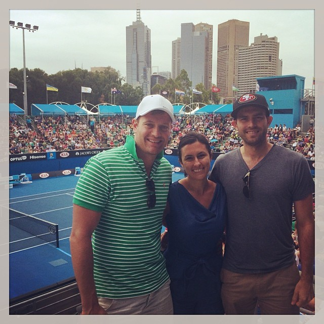

A sports fanatic who turned into a web developer, world traveler and online marketing entrepreneur.

Picture of the Week
This week's featured picture is the Sydney Opera House. The iconic shot of the opera house and harbour bridge in Sydney Australia!
Fresh Pics from My Life
Our newest pictures are from my recent trip to Sydney Australia..
Inside the Kitchen
Smells Like Bakin' starte in the garage of the husband wife duo Allison & Joseph. Allison is the baker and Joseph found a way for them to make a business out of her tasty treats. Flash forward to today and they have a successful store front, catering business and cupcake truck.
Get Bakin' with us
Call us: 1-555-CUP-CAKE
Email us: bakeon@smellslikebakin.com
We announce all of our new flavors first through Facebook & Twitter, and even take requests


© 2012 Smells Like Bakin' Cupcake Company. All Rights Reserved